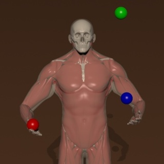

|

|
|
Abstract:
We propose a framework for simulation and control of the human musculoskeletal
system, capable of reproducing realistic animations of dexterous activities with
high-level coordination. We present the first controllable system in this class
that incorporates volumetric muscle actuators, tightly coupled with the motion
controller, in enhancement of line-segment approximations that prior art is
overwhelmingly restricted to. The theoretical framework put forth by our
methodology computes all the necessary Jacobians for control, even with the
drastically increased dimensionality of the state descriptors associated with
three-dimensional, volumetric muscles. The direct coupling of volumetric
actuators in the controller allows us to model muscular deficiencies that
manifest in shape and geometry, in ways that cannot be captured with
line-segment approximations. Our controller is coupled with a trajectory
optimization framework, and its efficacy is demonstrated in complex motion tasks
such as juggling, and weightlifting sequences with variable anatomic parameters
and interaction constraints.
|

![[PHOTO]](../../images/knight_small.png)